路變了，日常怎麼走？
從通勤、通學到就醫與物資運補，聽見交通變動如何進入每一天，也看見維護道路與公共服務的人。
「現在出門一趟，和以前有什麼不同？」一條公路，連著山，也連著人的生活。
帶著提問走進現場，用鏡頭記錄此刻，
在別人的生命故事裡，重新認識自己。
也走上三千多公尺的高山，打開五感，
在山林與靜坐冥想中，連結自己。
當熟悉的道路改變，
留在這裡的人，如何繼續生活？
地震與崩塌，讓中橫沿線的交通、觀光與日常面臨改變。這次天之校，我們帶著對土地與人的關心，走進中橫，聽居民、店家、第一線工作者與生態研究者，說出各自正在經歷的生活。
以訪談與現場觀察為起點，透過 AI 協作與敏捷工作流程，把聽見的故事，做成有脈絡、有溫度的影像紀錄。
本頁呈現活動學習規劃；沿線現況將由師生實地訪查記錄。圖片包含主辦方提供的場域參考照與歷次活動素材，非本次即時影像。
從通勤、通學到就醫與物資運補，聽見交通變動如何進入每一天，也看見維護道路與公共服務的人。
「現在出門一趟，和以前有什麼不同？」從店家、旅宿到山區農業，理解觀光與運輸的變化，如何牽動工作、生計與社區之間的支持。
「這段時間，你做了哪些調整？」在人的故事與森林生態之間，看見對家鄉的情感、與自然共處的經驗，以及面對變動的生命選擇。
「是什麼，讓你繼續在這裡生活？」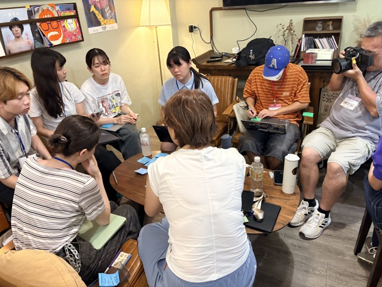
在徐柏峯教練帶領下，把大任務拆成可以完成的小步驟。每一輪拍攝後一起檢視、調整，再帶著更好的問題回到現場。
整理背景資料、建立訪綱、分配採訪與拍攝任務；AI 協助梳理問題與資訊缺口。
經受訪者同意後，以影片記錄訪談與生活現場，學習提問、聆聽、構圖與收音。
運用 AI 協助逐字稿、素材分類與故事架構；團隊以短週期檢視進度，核對引述與脈絡。
在專業指導下完成分鏡與剪輯，透過放映和回顧，說明自己的觀察與學習。
從花蓮出發，逐步走向高山。每一站，都從一個人的日常開始理解地方。
以下為規劃路線與擬邀訪對象，並非已確認出席名單。實際安排依受訪意願、道路通行及行前通知調整。
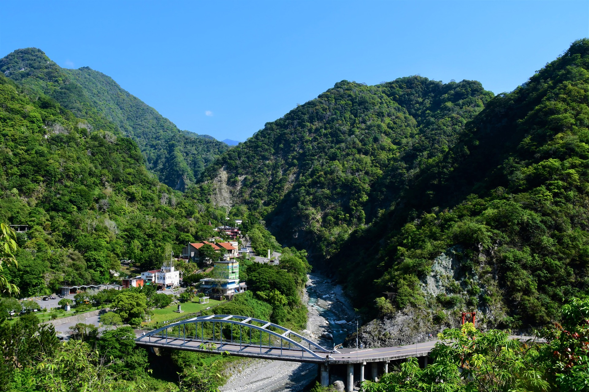
從天祥的聚落與橋梁，到高山上的補給站與山莊，我們想認識的，是風景之中持續生活、工作的人。
天祥｜聚落、交通與觀光生活的交會處。沿線經過的地方，有孩子上學的校園、居民生活的聚落，也有持續耕作與經營的果園。我們想靠近這些日常，聽人們說說與土地的連結，以及留下的選擇。
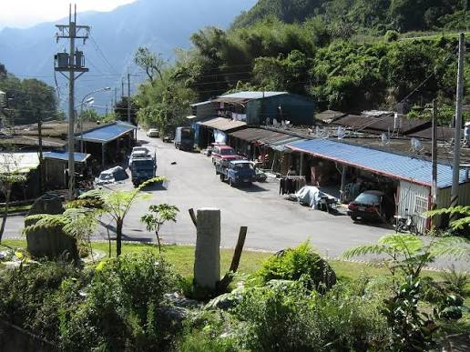
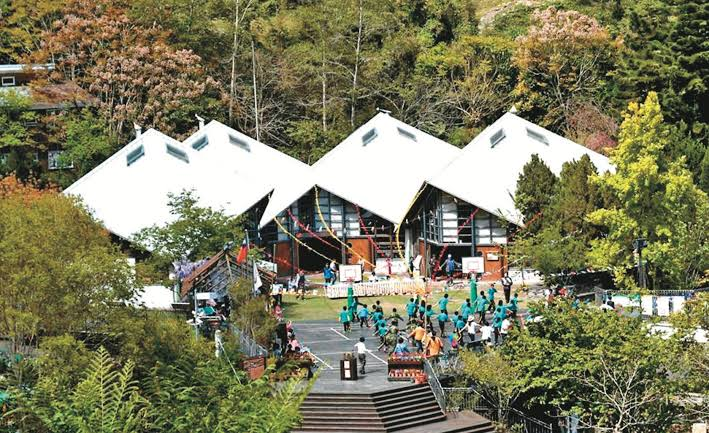
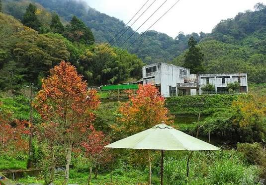
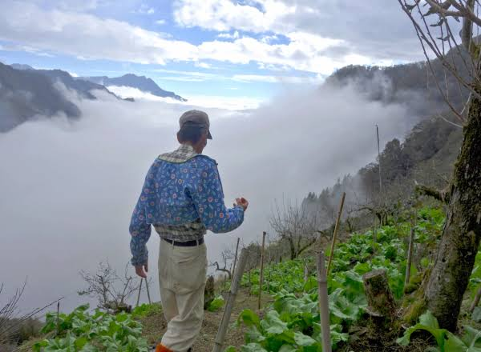
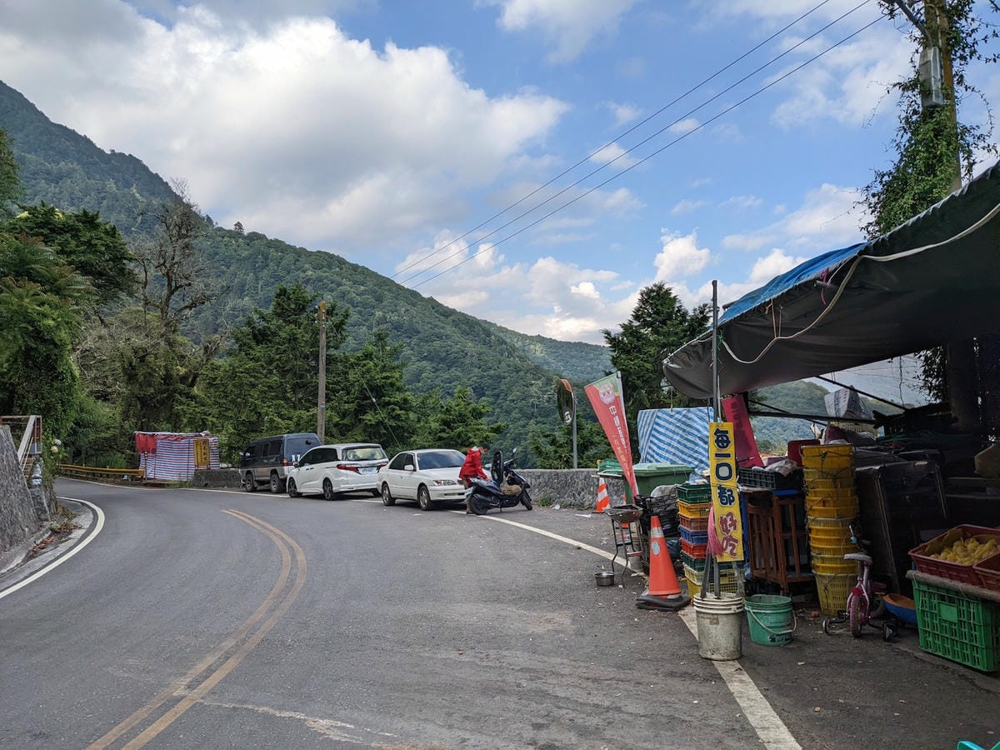
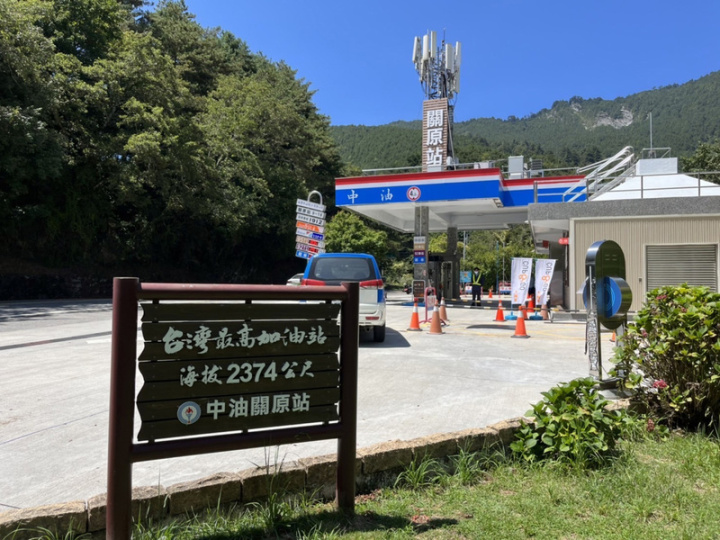
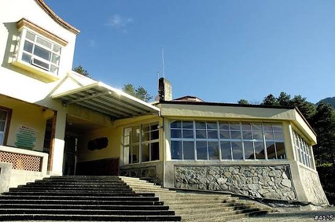
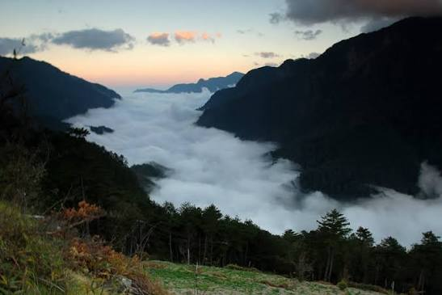
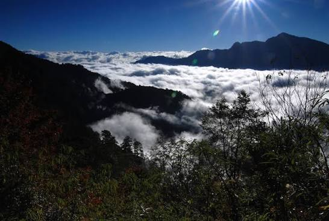
照片由主辦方提供作為場域參考；拍攝日期未確認，非本次活動或災後即時影像。雲海照片不指定拍攝地點，行程仍以正式安排為準。
擬邀黃斐悅、許育誠、吳海音、黃文彬、王元均等交流，從鳥類、野生動物、水域生態、環境參與與生物多樣性，看見人與自然的關係。
擬訪太魯閣國家公園管理單位，了解災後復原、保育、遊憩管理與地方生活之間的協調。
擬訪補給店家、餐飲經營者、天祥青年活動中心與太魯閣晶英酒店工作者，理解客源、運補與工作的改變。
擬透過在地夥伴接洽居民、有機農業工作者及西寶國小，聆聽耕作、通學、社區互助與留在家鄉的故事。
慈恩何家果園列為沿線觀察場域；另擬訪山莊、關原加油站、道路養護及警政服務人員，理解山區農業、高山補給、交通維護與生活支持。
規劃作為住宿與團隊整理素材的節點，也從用水、能源、物資與廢棄物，看見高山旅宿的日常課題。
走入老樹林間與草地，
打開五感，感受大地的能量。
這趟旅程，我們也把時間留給山林與自己。放慢腳步，在老樹之間、草地之上，留意風的聲音、林間的氣息、光影的變化，以及身體此刻的感受。
透過靜坐冥想，讓注意力回到呼吸與內在，
在感受山林的同時，也重新與自己連結。
走進老樹林間與草地，用眼、耳、鼻、口與身體感受當下，練習覺察自己與環境的關係。
在高山的遼闊裡，感受風、樹、土地與生命的節奏，讓日常匆忙的步調慢下來。
在引導下練習靜坐與冥想，回到呼吸，覺察身心與情緒，為自己留下一段安靜聆聽的時間。
把這份覺察帶回訪談與影像創作：更細緻地看見山林，更專注地聽人說話，也更清楚地感受自己。
新聞敘事、敏捷協作、攝影實作與五感覺察，陪同學走進地方故事，也打開與內在的連結。
前中視新聞主播，《小資賺大錢》《進擊大未來》等節目製作人與主持人。以豐富的採訪與節目製作經驗，陪同學找到提問角度，將訪談轉化為有脈絡的故事。
敏捷專家學會創辦人。帶領團隊結合 AI 與敏捷方法，拆解任務、短週期實作，透過持續回饋與回顧，協助同學推進影像紀錄。
專業攝影師，隨隊指導拍攝、分鏡與剪輯。從現場怎麼拍，到素材如何組成故事，帶領同學練習影像表達。
五感覺察老師、專業演員。帶領同學走入高山老樹林間與草地，打開五感，感受山林與大地的能量；透過靜坐冥想，讓注意力回到呼吸與內在，重新與自己連結。
採訪從尊重開始。拍攝前說明用途並取得同意，讓受訪者選擇願意分享的內容；涉及孩子的訪談，依學校與家長同意安排。
AI 協助整理，師生負責查證。我們回到原始影像核對文字與引述，區分當事人的經驗、團隊的觀察與仍待確認的資訊，保留故事原有的脈絡。
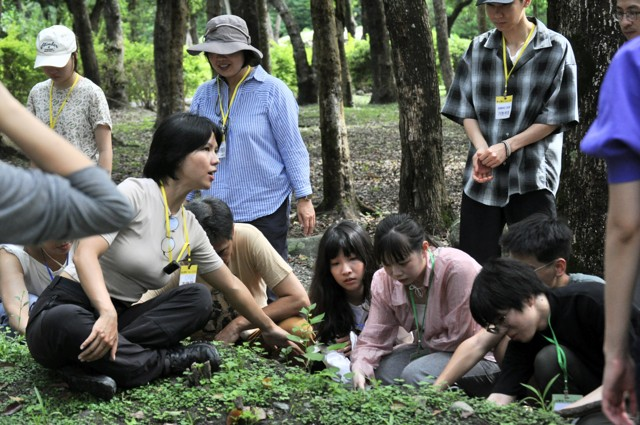
課程由採訪、拍攝到素材整理與剪輯逐步練習，並有隨隊指導。需攜帶的設備、工具與參與條件，會在正式招生與行前通知中說明。
本次改以中橫田野訪談與影像紀錄為核心，結合 AI 與敏捷工作流程。分組與角色分工將配合採訪任務安排，作品從現場觀察與受訪者的真實經驗發展。
本頁列出籌備方向，訪談與行程依邀約、天候、道路及現場條件調整。通行與活動範圍以行前通知及管理單位公告為準。
活動日期為 2027 年 1 月 3 日至 7 日，共五天，對象為 16歲以上青年，一般費用 NT$13,000。依海報，永續環境相關科系兩人以上同行享九折，每人 NT$11,700；資格認定及詳細條件以主辦單位說明為準。住宿、交通、費用包含項目及退費規則請於報名前確認。
帶著好奇與夥伴一起出發，
讓土地上的聲音，透過你的鏡頭被聽見。
永續環境相關科系 2 人以上同行享 9 折｜每人 NT$11,700。
報名與優惠詳細條件以主辦單位公告及報名系統為準。